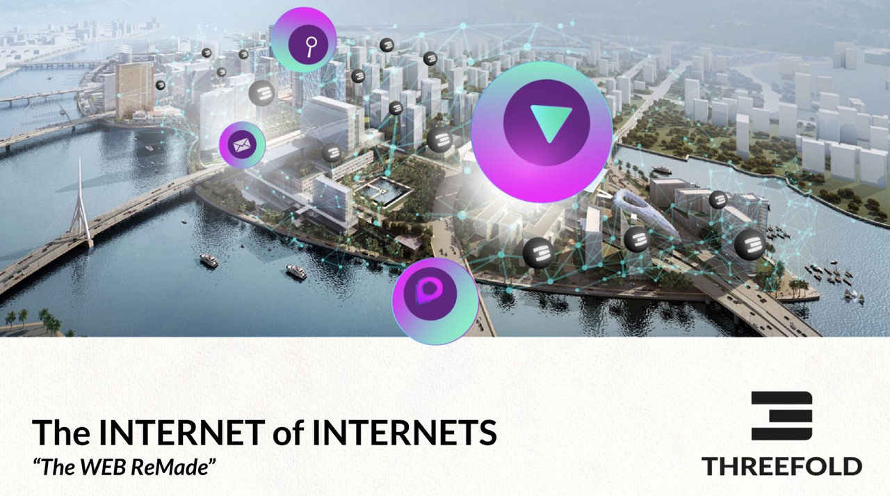

Long Story Short

The truth is that ThreeFold is a big project. Here we will try to make things a little simpler for you.
So, ThreeFold is building a new Internet. Why?
What it boils down to is that currently the Internet is only available to about 1/2 of the world (meaning billions are being left behind), it is centralized (a handful of large corporations profit off of our data), and it uses up to 10% of the world's energy consumption. So, we're building a new Internet that empowers equality (access), digital sovereignty (data ownership, for example), and sustainability (reduces energy consumption).
How does it work?
Everything on the Internet – websites, apps, photos, videos, etc – uses up capacity and is stored in huge data centers owned by big companies, mainly in North America, Europe, and some in Asia. In our solution, centralized data centers are replaced with a grid of "nodes" distributed around the world.
These nodes are owned by ThreeFold Farmers – but only the physical hardware – the data inside of the nodes belongs to the people or organizations who put it there. So, "farmers" plug in hardware and start to create capacity that can be used by people.
Farmers come in all shapes and sizes. Some farmers run small data centers while others simply run a node out of their living room.
When farmers connect active hardware (add capacity) to the ThreeFold_Grid, ThreeFold_Tokens are created. Farmers can then sell those tokens to people who want to use capacity (e.g. a developer that wants to build or host a website, or a person who wants to store some photos). More on tokens down below.
Seems quite lofty. How will you build it?
It's true that rebuilding the Internet is not so simple. But a lot of infrastructure has already been built and the technology is quite advanced. Over the last 2+ years, independent ThreeFold Farmers have already plugged in more than 80,000,000 GigaBytes worth of storage and 14,000 CPU Cores across 20+ countries. That might not mean a lot to non-technical folks but it is quite a significant amount.
20+ countries? What happened to equality?
As far along as we are, we still have work to do. One of our biggest goals in the near future is to expand the grid to Africa, South America, and parts of Asia where currently the Internet is too expensive or not available. Farming is incentivized around these key geographies.
So how can I access / use your Internet today? What can I do on it?
For the everyday person looking to benefit from a new, neutral Internet, some of the first experiences are coming alive Q1 2021. This includes communication tools, file storage, a wallet, & more – all with the advantages of being more sustainable for our planet and with full control of your own data. And over time, more and more experiences will come to this Internet. We'll be updating here and on our communication platforms as they come. But don't worry, as a user it doesn't change much – no coding required. :)
That said, if you're an IT professional or a developer, you can take advantage of the ThreeFold Peer-to-Peer Cloud!
Will [enter website or app here] be available on your Internet?
There are some tremendous reasons for a website or app to use our Internet, but that will really be up to the website or the app. In the end, we are providing a responsible solution for responsible people and organizations. We would love to host anybody who believes in what we are doing!
How are you making sure it's safe?
Hacking has become a part of life and is almost impossible to avoid in the current systems – they are too complex and require too many people to operate. This results in less security which results in lots of security breaches. First of all, we are collectively building new infrastructure (The ThreeFold Grid) which is totally peer-to-peer, meaning no third parties or intermediaries to store your data. Also, we took a look at the existing Internet and simplified it. By simplifying the architecture and instead creating technology that is self-driving & self-healing, we removed the human requirement and therefore vastly minimized the possibility for hacking or human error. Then, we also developed a storage algorithm which makes it such that if some of the information gets lost or stolen (somehow) or if some hardware goes down, it is all retrievable. Long story short, we flipped the existing system on its head.
What about the data ownership part?
That has a bit to do with the security as well. Since you own your data, you decide who gets access. Which means your data isn't just out "there" for the taking. Basically, we put you at the center of your digital life, where the applications and experiences you use serve you, not the other way around.
And how is it better for the planet?
There are a few reasons for us being more sustainable. Data centers are super unsustainable, so the simple (but incomplete) answer is "no more huge data centers." But if you want more detail:
- We use up to 3x less hardware for the same output, and using hardware at least 2x longer while maintaining good performance
- Having capacity everywhere, local to where users are – this reduces network requirements (and can even improve security)
- Using new algorithms (e.g. the one mentioned above for storage) which create a dramatic improvement in efficiency
- Re-using hardware where possible – let’s not throw away
How much will it cost?
In the end we want to provide sustainable access to the Internet and all of its solutions for less than a dollar per month per person but for now the cost will depend on what you choose to do. Certain experiences will cost money. Storing photos or videos, for example. But all at a fair price.
Speaking of money – so what's up with the ThreeFold_Token?
As we mentioned above, tokens are generated when ThreeFold Farmers adds capacity to the ThreeFold_Grid.
Essentially, the ThreeFold_Token is the medium of exchange on the new Internet. So, if a developer wants to build something (e.g. a website or an app) or a user wants to store something (e.g. photos), he/she/they use(s) ThreeFold_Tokens.
Need more answers?
We hope that helps explain things. Obviously there is a whole wiki here to dive in to. If you don't find what you're looking for, please reach out us on our forum.